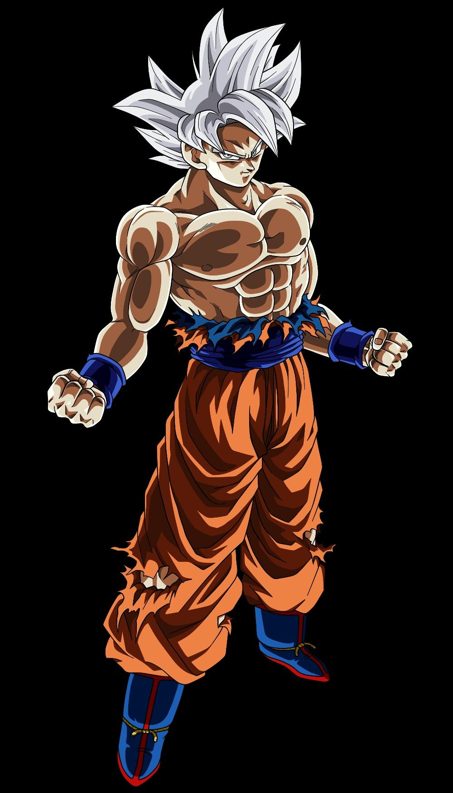

DBS

Es un manga escrito e ilustrado por Akira Toriyama.
Fue publicado originalmente en la revista Shōnen Jump, de la editorial japonesa Shūeisha,entre 1984 y 1995.12
Su trama describe las aventuras de Gokū, un guerrero saiyajin, cuyo fin es proteger a la Tierra de otros seres que quieren conquistarla y exterminar a la humanidad.
Conforme transcurre la trama, conoce a otros personajes que le ayudan en este propósito.
El nombre de la serie proviene de unas esferas mágicas que al ser reunidas invocan a un dragón que concede deseos.
En varias ocasiones resultan útiles tanto para Gokū y sus amigos como para la humanidad, aunque también son procuradas de forma constante por algunos seres malignos.